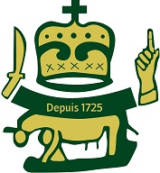

<!DOCTYPE html>
		<html lang="fr>

<head>

<meta charset="UTF-8" />
<link rel="stylesheet"  href="style.css">
<title>agoè</title>
<div class="maindiv"></div>
</head>
<body>
	<header>
	       <br><br><br><br>
             
		
              
		   <div class="slider">
		    	<div class="slides">
		  <!-- 	  <slide></slide>	
    		<slide></slide> -->
                   
		    	</div>
			</div>

	        

	</header>
	<br><br><br><br>
	<p id="nomSite">CANTON D'AGOE-NYIVE</p> 

	  
	   <div class="slider">
		<div class="slides">
  <!-- 	  <slide></slide>	
	<slide></slide> -->
		   
		</div>
	</div>

	
	<br/>    <br/>   <br/>

	<hr size="2" color="yellow"  width="90%" align="center" top="80px";>
<marquee>Le Maire de la commune d'Agoè-nyivé invite les responsables des différents groupes organisés dans la commune à se faire enregistrer jusqu'au 06 Juin 2021 au secrétariat de la Division Coopération sis à la mairie d'Agoè-Nyivé. </marquee>
	<hr size="10" color="yellow"  width="90%" align="center";>

	

	<ul id="vertical">
		<li><a href="http://www.slateafrique.com/97497/proverbes-africains-sagesse-populaire-selection">Pensée du jour</a></li>
		<li><a href="https://citations.ouest-france.fr/citations-proverbe-africain-2252.html">Citations</a></li>
		<li><a href="https://dicocitations.lemonde.fr/proverbes-africains-proverbe-de-l-afrique.php">Proverbe</a></li>


	    <ul id="horizontal">
		    <li><a href="index.html">Acceuil</a></li>
			<li><a href="AGOE/agoè/images/Rapport_MonographieAgoenyive(18.10.13).pdf">Monographie</a></li>
			<li><a href="Annonces.html">Annonces & communiqués</a></li>
			<li><a href="Apropos.html">A propos</a></li>
		</ul> 
<br/>    <br/>   <br/>
<h1 id=AC>GENESE DU ROYAUME</h1><br/><br/><br/>
			        
			       <p id="bigT" align="center">LANVON-SEDJRO D’AGOE-NYIVE</p><br/>

			      
<p  id="bigger" style="text-align:justify; width:750px ">
 	Avec l’exode de Notsè sous le Roi AGOKOLI 1er, le village d’AGOE-NYIVE fut fondé en 1725 et placé sous l’autorité 
 	de Togbui LANVON à sa mort, ce dernier fut succédé de père en fils par les héritiers KOULANKPO, AKREMA et HONSOU.<br/>


 	Au temps de la colonisation allemande, ce fut le tour du fils de HONSOU, en la personne de Togbui SEDJRO 1er qui 
 	fut choisi par le Conseil Coutumier d’Agoè-Nyivé pour le remplacer. Celui-ci fut reconnu officiellement par l’Ad-
 	ministration Allemande en 1910.<br/>


 	A sa mort, il y eut une régence assumée par son petit frère DOUVON pendant la colonisation anglaise jusqu’au 19 
 	Juillet 1921, date à laquelle Togbui SEDJRO II fut intrônisé et reconnu officiellement par le Gouvernement Français. Son règne dura 37 ans avant sa mort le 6 Janvier 1958.<br/>


 	Au décès de ce dernier et conformément à sa dernière volonté, son héritier Amemaka Kouami Denis lui succéda sous le nom de SEDJRO III après approbation de la Famille Royale, du Conseil Coutumier et de toute la population d’Agoè-Nyivé le 19 Janvier 1958. Cette désignation fut reconnue officiellement par le Gouvernement Togolais le 8 Octobre de la même année (Arrêté no 193/PM/INT). <br/>


 
 	Togbui Amemaka Kouami Denis SEDJRO III assumait cette responsabilité avec l’honneur et la dignité dûs au Trône Ancestral, paisiblement avec son peuple qui l’aimait tant jusqu’au 30 Janvier 1982, lorsqu’un malheur le frappa.<br/>

 


 	Dans l’espérance en Dieu, il a surmonté les difficultés de la vie pendant 15 années.<br/>


 
 	Soucieux de l’unité nationale en général et du canton d’Agoè-Nyivé en particulier, dans sa magnanimité, Son Excellence, le Général Gnassingbé EYADEMA, Président de la République, Chef de l’Etat Chef Suprême des Armées qui est un homme d’impartialité, d’objectivité, d’abnégation et surtout de Justice, a constaté et reconnu officiellement la désignation par voie coutumière de Togbui Amemaka Kouami Denis SEDJRO III en qualité de Chef de Canton d’Agoè-Nyivé en particulier, dans sa magnanimité, son Excellence, le Général Gnassingbé EYADEMA, Président de la République, Chef de l’Etat chef Suprême des Armées qui est un homme d’impartialité, d’objectivité, d’abnégation et surtout de de Justice, a constaté et reconnu officiellement la désignation par voie coutuière de Togbui Amemaka Kouami Denis SEDJRO III en qualité de Chef de Canton d’Agoè-Nyivé par decret no 96-91/PR. du 12 Juillet 1996 suite au Procès-Verbal de la réunion du Conseil Coutumier du 20 Avril 1996 pour le bien être de tous les fils du Canton. <br/>


 	L'actuel chef canton d'Agoè-Nyivé est Togbui Edmond Kodjo Helou SEDJRO IV, qui a pris officiellement la succession du trône de son père défunt, le 24 Mai 2014.
 </p>


		 <hr size="10" color="yellow"  width="90%" align="center" margin-top="100px";>
	    


	     <div id="footer">

	     <div class="col1"> <video src="AGOE/agoè/P3C5V2.mp4" controls width="200">
	     </video>
		<h4>OBJECTIFS DU SITE EN VIDEO</h4>
		 </div>

		 <div class="col2"> <br/><br/> &emsp;&emsp;&emsp;&emsp;&emsp;&emsp; CONTACTEZ NOUS  <br/><br/> &emsp; Téléphone : 0022893252700 / 0022890341767<br/><br/> &emsp; E-mail : funshia22@gmail.com  <br/><br/><br/><br/>  &emsp;&emsp;&emsp;&emsp;&emsp;&emsp;&emsp;&emsp;&emsp;  <strong><a href="galerie.html">GALERIE</a></strong>
		 </div>

		 <div class="col3"><iframe src="https://www.google.com/maps/d/embed?mid=1oTHHDqZ_MYcYfnefIXbwStGnRUI_Pz6q" width="640" height="480"></iframe>
		 <br/><br/>
		 </div> 

	     </div>
</p>
</div>

	</body>

	</html>